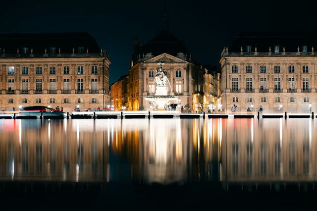
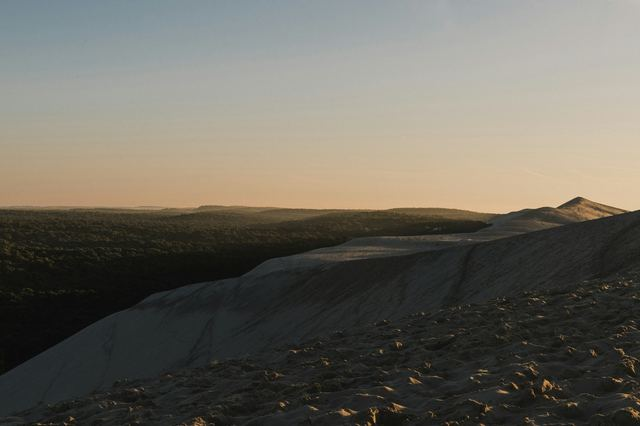
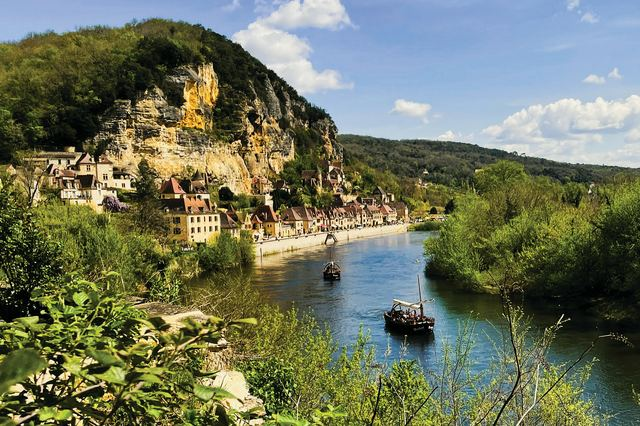

Aquitaine, from the Bordeaux vineyards to the Dordogne castles
A UNESCO-listed wine capital, Europe’s tallest sand dune, villages of golden stone and fortresses perched high above the Dordogne.
Photo: snap wander / Unsplash
In the Gironde, Bordeaux and its riverside, the Saint-Émilion vineyards and the Dune du Pilat by the Arcachon Bay are easy to see in a few days. Further east, the Périgord lines up Périgueux, Sarlat and a Dordogne valley dotted with castles and villages clinging to the cliffs.
The TGV links Paris to Bordeaux in just over two hours; for the Périgord, a car is the most practical option. Each guide tells you what to see, how to get there and what to book.
What to see in Aquitaine
-

BordeauxPlace de la Bourse, the Water Mirror, the quays and the Cité du Vin.
-
 Saint-Émilion
Saint-ÉmilionThe medieval village, the Monolithic Church and the great vineyards.
-

Dune du PilatEurope’s tallest sand dune, facing the Banc d’Arguin and Cap Ferret.
-
 Périgueux
PérigueuxThe domed cathedral, Roman remains and old Périgueux.
-
 Sarlat
SarlatThe golden stone old town, its market and the panoramic lift.
-

La Roque-GageacThe village squeezed between cliff and Dordogne, its boats and cliff fort.
-
 Beynac castle
Beynac castleThe fortress on its cliff and the village on the Dordogne.
-
 Bergerac
BergeracThe half-timbered old town, Cyrano, the river boats and Monbazillac wines.
-
 Lascaux
LascauxThe full replica of the cave, with its painted horses and aurochs.
-
 Castelnaud Castle
Castelnaud CastleThe fortress facing Beynac and its museum of medieval warfare.
-
 Château des Milandes
Château des MilandesJosephine Baker’s home, its gardens and birds of prey.